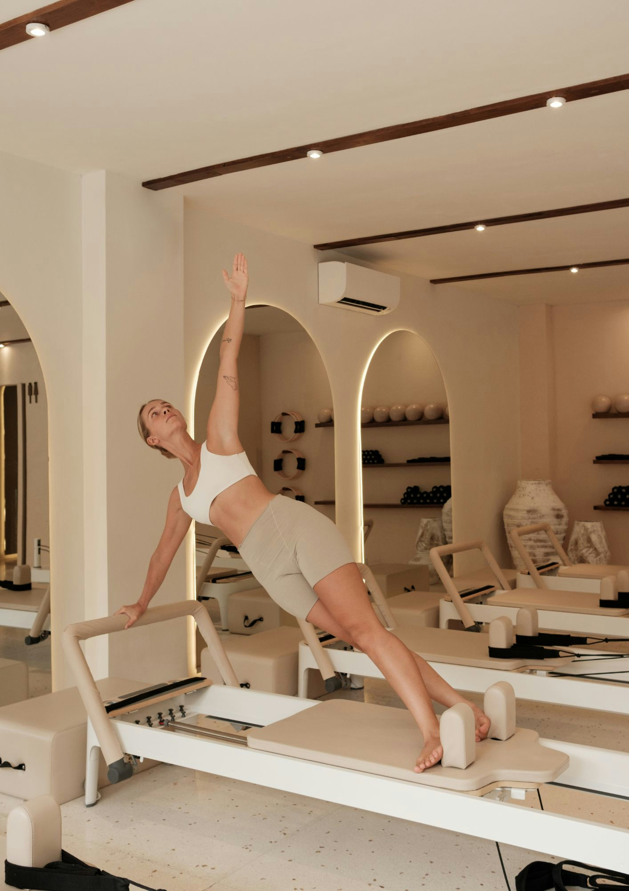

Pilates Nedir?
Pilates, bedenin dengeli bir şekilde güçlenmesini, esnemesini ve doğru duruşun kazanılmasını hedefleyen bir egzersiz yöntemidir. Joseph Pilates tarafından geliştirilen bu yöntem; nefes kontrolü, konsantrasyon, merkezleme (core), akıcılık, denge ve kesinlik ilkelerine dayanır. Hem zihin hem de beden bütünlüğünü esas alan Pilates, kasları sadece dış görünüm olarak değil, içten dışa güçlendirmeyi amaçlar. Düzenli yapıldığında vücut farkındalığını artırır ve postürü düzeltir.
Pilatesin Faydaları Nelerdir?
- Duruşu Düzeltir: Omurga hizasını destekleyerek kamburluğu ve duruş bozukluklarını önler.
- Kasları Güçlendirir: Özellikle karın, bel, kalça ve sırt kaslarını derinlemesine çalıştırır.
- Esnekliği Artırır: Kasların daha uzun, daha elastik ve dengeli hale gelmesini sağlar.
- Zihin-Beden Bağlantısını Güçlendirir: Odaklanmayı ve nefes kontrolünü geliştirir, zihinsel rahatlama sağlar.
- Stresi Azaltır: Nefes ve hareketin uyumu sayesinde zihni sakinleştirir, stres ve gerginliği azaltır.
- Sakatlık Riskini Azaltır: Dengeli kas gelişimi sayesinde vücut dengesini korur ve yaralanma riskini düşürür.
- Hamilelik Döneminde Destek Olur: Doğru şekilde uygulandığında, hamilelik sürecinde vücudu destekler ve doğum sonrası toparlanmayı hızlandırır.